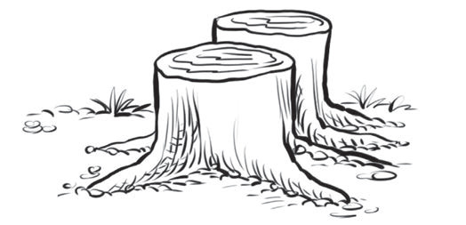
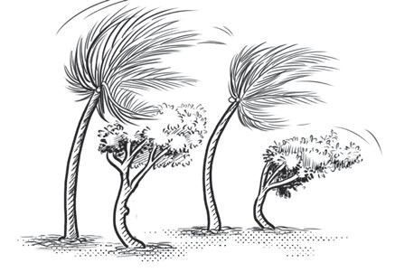

Images with wind direction
In drawing, lines can be used to draw images showing the direction of the wind. Examine the direction of the lines in the trees in Figure 17, and you will notice that they show the direction of the wind.


Activity 11
Draw anything available in your school or home environment by considering the line techniques.